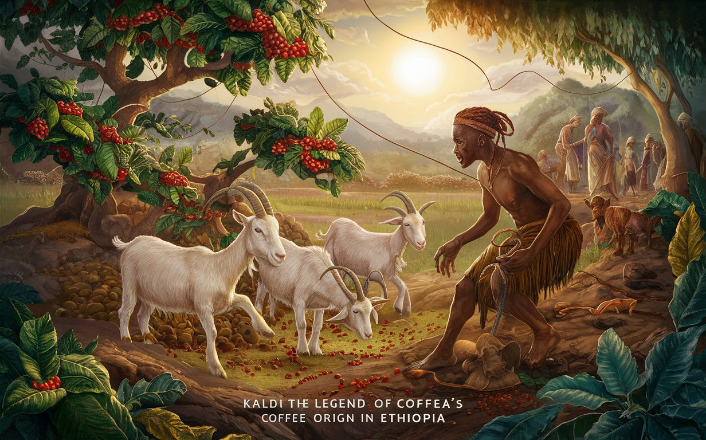
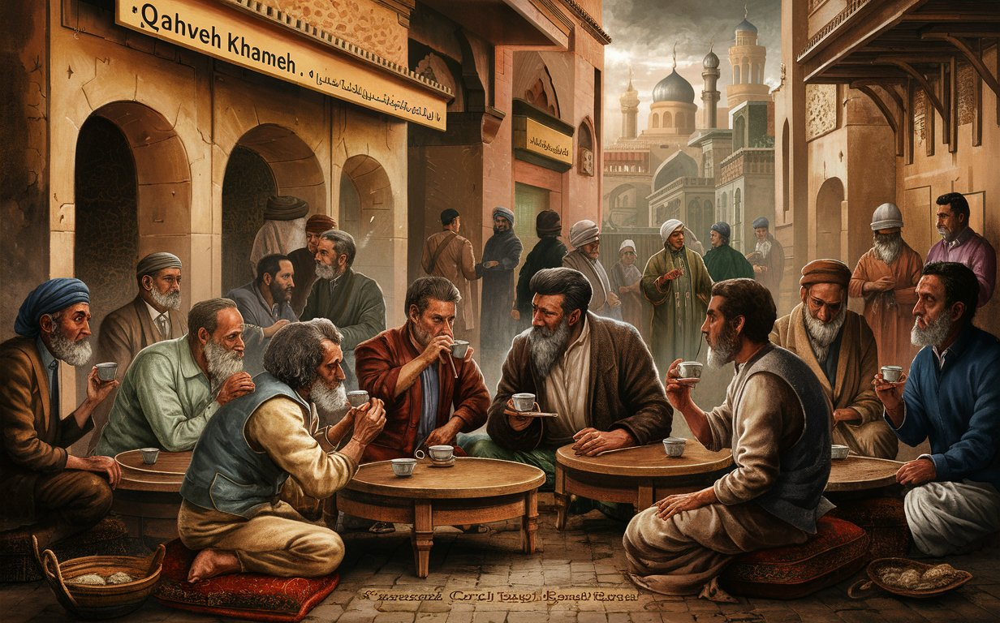
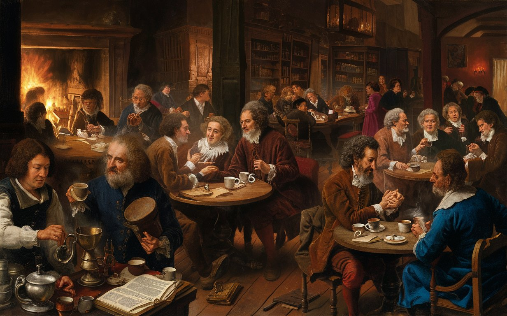
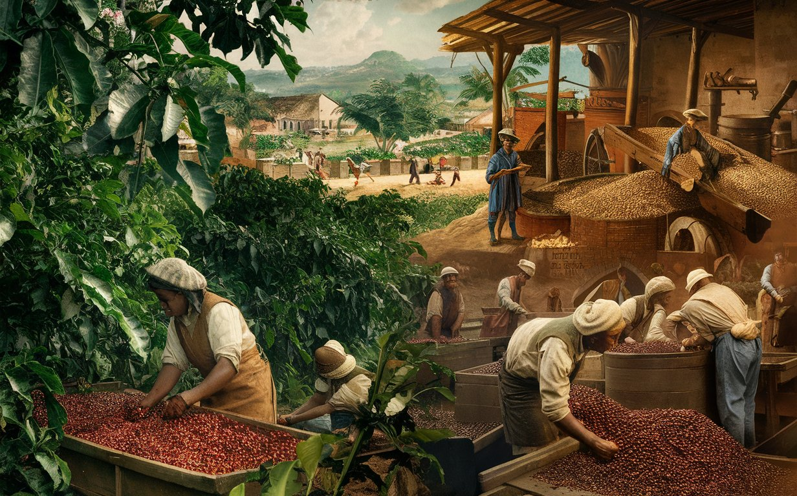
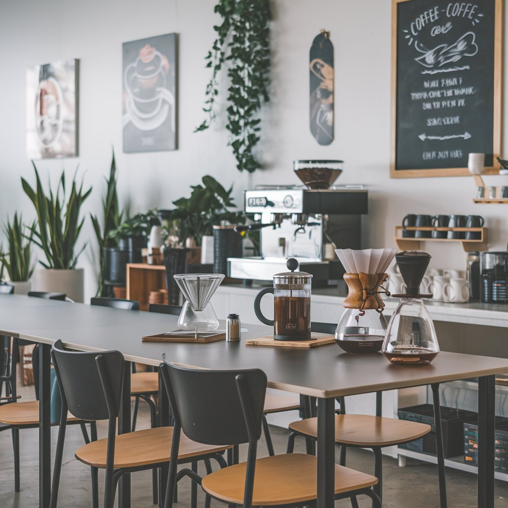

The discovery of coffee originated in ancient Ethiopia with Kaldi, whose goats became energetic after eating the berries. This sparked coffee's cultivation and global popularity as a social beverage.

In the Arab world, coffee became a cultural staple during the 15th century. It sparked lively coffeehouses, where people gathered to socialize, discuss ideas, and enjoy this energizing beverage.

The European coffeehouse revolution began in the 17th century, transforming social life. These venues fostered discussion, art, and politics, becoming hubs for the Enlightenment and shaping modern culture.

The coffee trade expanded in the 18th century, driven by demand in Europe. Plantations flourished in the Americas and Asia, establishing coffee as a global commodity and economic powerhouse.

Modern coffee culture emphasizes specialty brews, artisanal methods, and sustainability. Cafés have evolved into community spaces, where baristas craft unique drinks, reflecting a global appreciation for quality and innovation.